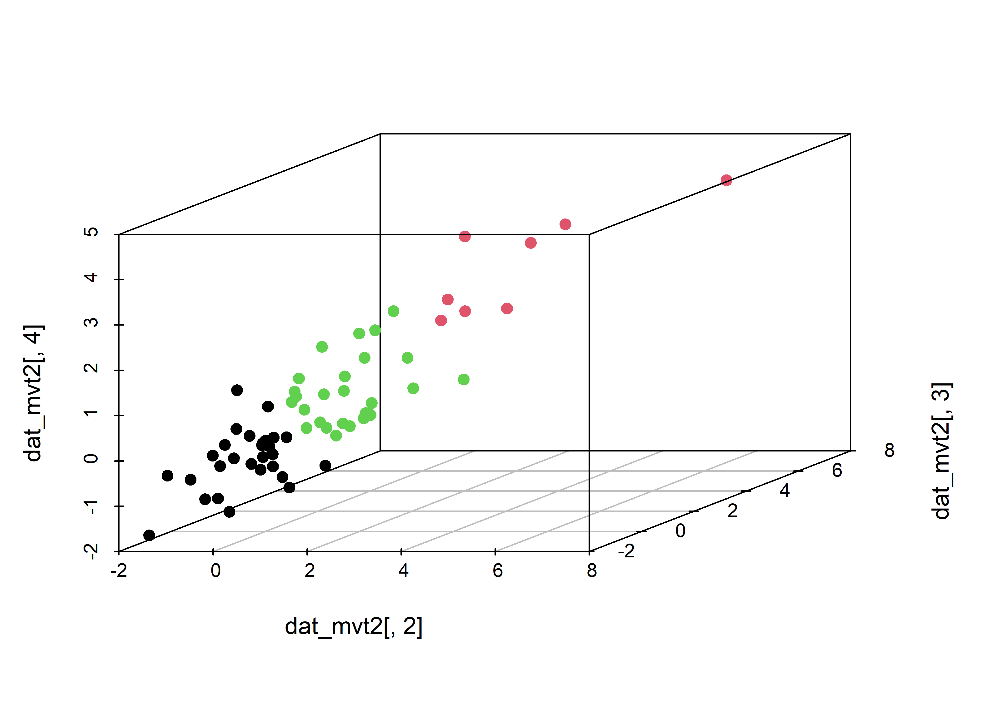
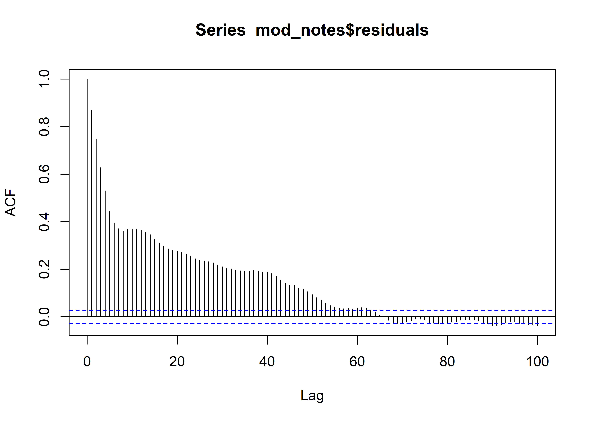
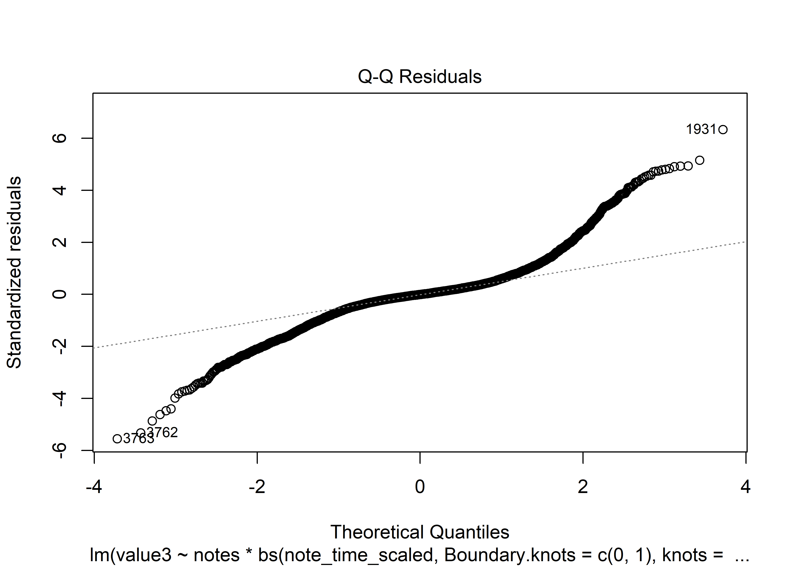
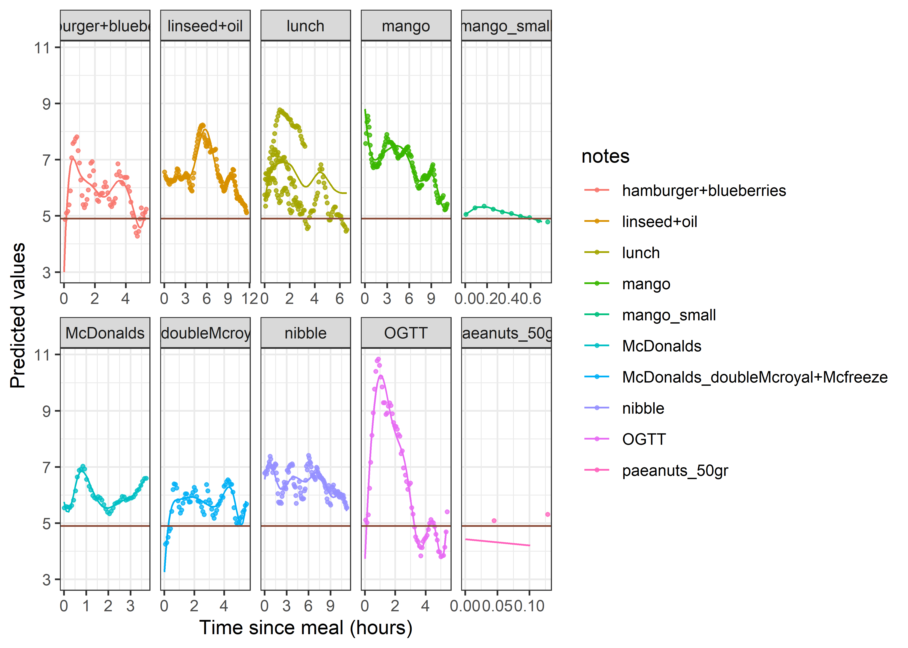

CGM measurements of a health 30-something male
Introduction
[…] It is my report template in Quarto. It has most Rmd features and can generate .docx. Table of Contents should be wrangled after that at the moment. PDF can be generated via Word (save as..). The auto-generated .html is nice too. Computationally intensive stuff should be referenced. None of this Vignette precompile nonsense I’ve been working so hard to implement :( Computationally intensive stuff should be referenced externally.
Description of the study
[…]
Data extraction
[…]
Examples for quick reference
Tables




| Df | Sum Sq | Mean Sq | F value | Pr(>F) | |
|---|---|---|---|---|---|
| notes_category | 2 | 58.24223 | 29.1211149 | 85.34916 | 0 |
| ns(tod, df = 4) | 4 | 187.93381 | 46.9834525 | 137.70072 | 0 |
| notes:bs(note_time_scaled, Boundary.knots = c(0, 1), knots = seq(0, 1, length.out = 7)[2:6]) | 513 | 4249.23105 | 8.2831015 | 24.27640 | 0 |
| Residuals | 4198 | 1432.35662 | 0.3411998 | NA | NA |
| Most extreme Cook's distances | |
|---|---|
| 3604 | 262.9235831 |
| 4626 | 17.9880339 |
| 2144 | 0.3999725 |
| 3603 | 0.3629004 |
| 3596 | 0.3482431 |
| 2035 | 0.1784399 |
| 4625 | 0.0271533 |
| 575 | 0.0184130 |
| 3619 | 0.0181936 |
| 3594 | 0.0103536 |








Remarks
MD5 checksum of the database used
Other information regarding the document’s compilation
Analyses were conducted using the R Statistical language (version 4.3.1; R Core Team, 2023) on Windows 10 x64 (build 19045), using the packages lubridate (version 1.9.3; Grolemund G, Wickham H, 2011), RSQLite (version 2.3.4; Müller K et al., 2023), fuzzyjoin (version 0.1.6; Robinson D, 2020), ggplot2 (version 3.4.4; Wickham H, 2016) and dplyr (version 1.1.4; Wickham H et al., 2023).
References
- Grolemund G, Wickham H (2011). “Dates and Times Made Easy with lubridate.” Journal of Statistical Software, 40(3), 1-25. https://www.jstatsoft.org/v40/i03/.
- Müller K, Wickham H, James DA, Falcon S (2023). RSQLite: SQLite Interface for R. R package version 2.3.4, https://CRAN.R-project.org/package=RSQLite.
- R Core Team (2023). R: A Language and Environment for Statistical Computing. R Foundation for Statistical Computing, Vienna, Austria. https://www.R-project.org/.
- Robinson D (2020). fuzzyjoin: Join Tables Together on Inexact Matching. R package version 0.1.6, https://CRAN.R-project.org/package=fuzzyjoin.
- Wickham H (2016). ggplot2: Elegant Graphics for Data Analysis. Springer-Verlag New York. ISBN 978-3-319-24277-4, https://ggplot2.tidyverse.org.
- Wickham H, François R, Henry L, Müller K, Vaughan D (2023). dplyr: A Grammar of Data Manipulation. R package version 1.1.4, https://CRAN.R-project.org/package=dplyr.
Time of compilation
2023-12-20 11:15:16.818173